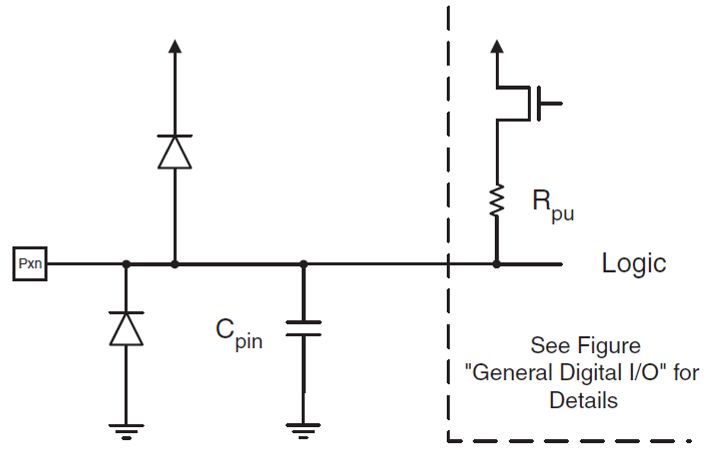

In this lecture we will be looking at two different approaches to reading and writing to ports on a microcontroller.
The first approach discussed is using library files and predefined functions to control I/O ports as is conventionally done with the Arduino IDE.
The second approach will look at accessing I/O bits directly using bit masks to select the desired pins.
Lecture topics
We begin by looking at digital inputs and outputs before moving onto to show a detailed example program implemented on the Atmel ATmega328 microcontroller.
Imagine a circuit with LEDs connected to D8 and D9 of the Atmel ATmega328 microcontroller.
Both LEDs will be wired to PORTD. How can the LED at D9 be switched on without changing the state of the LED at D8?
The answer is to use the pin functions provided by the Arduino library. These functions allow programmers to gain direct access to particular pins
void setup(){// put your setup code here, to run once: pinMode(9, OUTPUT);}void loop(){// put your main code here, to run repeatedly: digitalWrite(9, HIGH); delay(1000); digitalWrite(9, LOW);}
The include file Arduino.h
Listing 1: Declaration of the digital I/O functions for Ardunio hardware (lines 134–136 of Ardunio.h)
Listing 2: Function pinMode (wiring_digital.c line 29)
void pinMode(uint8_t pin,uint8_t mode){uint8_t bit = digitalPinToBitMask(pin);uint8_t port = digitalPinToPort(pin);volatileuint8_t*reg,*out;if(port == NOT_A_PIN)return;// JWS: can I let the optimizer do this? reg = portModeRegister(port); out = portOutputRegister(port);if(mode == INPUT){uint8_t oldSREG = SREG; cli();*reg &=~bit;*out &=~bit; SREG = oldSREG;}elseif(mode == INPUT_PULLUP){uint8_t oldSREG = SREG; cli();*reg &=~bit;*out |= bit; SREG = oldSREG;}else{uint8_t oldSREG = SREG; cli();*reg |= bit; SREG = oldSREG;}}
digitalWrite
Listing 3: Function digitalWrite (wiring_digital.c line 138)
void digitalWrite(uint8_t pin,uint8_t val){uint8_t timer = digitalPinToTimer(pin);uint8_t bit = digitalPinToBitMask(pin);uint8_t port = digitalPinToPort(pin);volatileuint8_t*out;if(port == NOT_A_PIN)return;// If the pin that support PWM output, we need to turn it off// before doing a digital write.if(timer != NOT_ON_TIMER) turnOffPWM(timer); out = portOutputRegister(port);uint8_t oldSREG = SREG; cli();if(val == LOW){*out &=~bit;}else{*out |= bit;} SREG = oldSREG;}
digitalRead
Listing 4: Function digitalRead (wiring_digital.c line 165)
int digitalRead(uint8_t pin){uint8_t timer = digitalPinToTimer(pin);uint8_t bit = digitalPinToBitMask(pin);uint8_t port = digitalPinToPort(pin);if(port == NOT_A_PIN)return LOW;// If the pin that support PWM output, we need to turn it off// before getting a digital reading.if(timer != NOT_ON_TIMER) turnOffPWM(timer);if(*portInputRegister(port)& bit)return HIGH;return LOW;}
Advantages and disadvantages of using the Arduino IDE
Advantages
Code is cross processor compatible.
Code is easy to understand.
Code controls a named pin on the board and is therefore easy to wire up.
Changing code to use different pins is trivial.
Disadvantages
Code is slower than accessing the ports directly.
You cannot perform multiple bit reads or writes in a single action.
Bitmasking
Logical Bitwise Operators
Table 1: The bitwise logic operators
Logical Operation
Operator
AND
&
OR
|
XOR
^
NOT
~
Shift right
>>
Shift left
<<
Truth tables for the bitwise logical operators.
The truth tables for bitwise logical operators are given for AND (&) in Table 2, OR (|) in Table 3, XOR (^) in Table 4, and NOT (~) in Table 5.
Table 2: Bitwise AND
A
B
A & B
0
0
0
0
1
0
1
0
0
1
1
1
Table 3: Bitwise OR
A
B
A | B
0
0
0
0
1
1
1
0
1
1
1
1
Table 4: Bitwise XOR
A
B
A ^ B
0
0
0
0
1
1
1
0
1
1
1
0
Table 5: Bitwise XOR
A
~A
0
1
1
0
Masking Example
Consider an example where you want to know if bits 0 and 7 are both on / high / logic 1 but you don’t care about any other bits.
input =0b10100011;if(input &0b10000001==0b10000001){// do something;}
Figure 2: A photograph of the example circuit which has two buttons and two LEDs. When the left button is pressed, the red LED lights up. When the right button is pressed the green LED lights up.
Desired operation
When the left push button is pressed, the red LED (Port B Bit 1) is illuminated.
When the right push button is pressed, the green LED (Port B Bit 0) illuminated.
The buttons are digital inputs with pull-up resistors (so active low) and are connected to pins 1 and 2 of port D respectively.
What does the code for this look like without using the predefined Arduino functions pinMode and digitalRead?
Example Code - statement 1
#include <stdint.h>
Data types defined in <stdint.h>.
Table 6: Specific integral type limits
Specifier
Signing
Bits
Bytes
Minimum Value
Maximum Value
int8_t
Signed
8
1
\(-2^7\)
\(2^7-1\)
uint8_t
Unsigned
8
1
\(0\)
\(2^8 - 1\)
int16_t
Signed
16
2
\(-2^{16}\)
\(2^{16} - 1\)
uint16_t
Unsigned
16
2
\(0\)
\(2^{16} - 1\)
int32_t
Signed
32
4
\(-2^{31}\)
\(2^{31} - 1\)
uint32_t
Unsigned
32
4
\(0\)
\(2^{32} - 1\)
int64_t
Signed
64
8
\(-2^{63}\)
\(2^{63} - 1\)
uint64_t
Unsigned
64
8
\(0\)
\(2^{64} - 1\)
Example code - aligning port names to the I/O memory map
The full set up which sets up the ports, data direction registers and pins is:
//I/O and ADC Register definitions taken from datasheet#define PORTD (*(volatileuint8_t*)(0x2B))#define DDRD (*(volatileuint8_t*)(0x2A))#define PIND (*(volatileuint8_t*)(0x29))#define PORTB (*(volatileuint8_t*)(0x25))#define DDRB (*(volatileuint8_t*)(0x24))#define PINB (*(volatileuint8_t*)(0x23))
Figure 4: Video illustrating the setting up of the data direction registers.
Example Code - Set pull-ups for inputs and initialize outputs

Figure 5: Video illustrating the setting of the port D for input and resetting port B
Example Code - The infinite for loop
The infinite for loop is quite a common idiom in C:
for(;;;){// code that repeats forever}
Any code that is placed inside the for loop will run forever.
Example Code - Reading the button
if((PIND &0b00000100)==0){ PORTB =0b00000001;// Sets port B, bit 0 to logic 1/high which switches the LED connected to D8 on.}
Figure 6: Video showing how the state of the buttons is interogated using bit masks.
Exercise
Similar code is used to test the left button on PORTD pin 3 to illuminate the green LED on PORTB pin 1.
See if you can write this code.
Solution
if((PIND &0b00001000)==0){ PORTB =0b00000010;// Sets port B, bit 1 to logic 1/high which switches the LED connected to D9 on.}
The full program
The full program is available as a GitHub gist: main.c. You will need a fully featured IDE, such as Microchip Studio, to compile and upload the code to the Ardino nano board.
Simulation
Wokwi is an online Electronics simulator. You can use it to simulate Arduino, ESP32, STM32, and many other popular boards, parts and sensors. – Welcome to Wokwi!
My 2024-2025 EG-353 Individual Engineering Project student, Yousef Alsayegh, has created Wokwi simulations of Ben Clifford’s demonstration programs. Here is the simulation of this week’s simulation Week 5: Interfacing to digital I/O with C. You can run the simulation and play with the code.
Exercise
Draw a flow-chart for the full program. Use subprocesses for the init() and loop() blocks.
Summary
In this section we have:
Begun to look at I/O operations on the Atmel Atmega 328 microcontroller including the registers and checking/setting states based on flow control statements.
Introduced bit masking to read/write individual bits of a register without affecting the remaining bits.
Looked at a detailed example program which uses the state of two pushbuttons to set whether an LED is illuminated or not.
On Canvas
This week on the canvas course page, you will find the sample programs from today’s lecture.
Look through these and ensure you are confident in how they work and how the masks are defined.
There is also a short quiz to test your knowledge on these topics.
Any Questions?
Please use the Course Question Board on Canvas or take advantage of the lecturers’ office hours.
Arduino.h and wiring_digital.c are hidden away in the installation folders for the Arduino IDE. The examples versions shown here are taken from the GitHub repository github.com/arduino/ArduinoCore-avr.
To see the full contents see: Arduino.h on GitHub.
In the case of I/O specific bits refers to individual I/O pins.
Pins D8 and D9 are respectively bits 0 and 1 of Port B.
Idiomatic C often uses the shortcut PORTB |= 0x00000010; There are many such assignment operators in C. For example: +=, -=, &= etc. They all mean the same thing: var = var op argument. Internally, the C compiler treats both forms the same so their use is a matter of style. The full version is easier to read and understand. The shortcut is quicker to type, but arguably less easy to read and understand.
In this definition we use the qualifier volatile to inform the compiler that the variable value can be changed any time without any task given by the source code. Without this qualifier, depending on the optimisation level of the compiler this may result in code that doesn’t work as it doesn’t know the value can be changed by external sources. The asterisk symbol is used to denote a pointer, for now you do not need to know what this explicitly mean but in short a pointer is a variable whose value is the address of another variable, i.e., direct address of the memory location rather than a value.
The actual code is slightly different and if you are interested you can access it here: main.cpp. Note that the sketch function setup() is called once first, then loop() is called each time through the infinite loop.
The actual code is slightly different and if you are interested you can access it here: main.cpp. Note that the sketch function setup() is called once first, then loop() is called each time through the infinite loop.